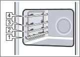

CircoTherm hot air
40-200 °C
Bake or roast on one or more levels.
Exact-model visual reference
Shelf levels and heating-mode pictograms extracted from the official English interactive manual.
Cooking compartment
The four shelf positions are numbered from bottom to top.

Control symbols
Temperature ranges and summaries are for orientation. Use the complete manual for detailed recommendations.
40-200 °C
Bake or roast on one or more levels.
50-250 °C
Traditional baking or roasting on one level.
50-250 °C
Poultry, whole fish and larger meat joints.
50-250 °C
Food requiring strong heat from below.
180-240 °C
Bread, rolls and high-temperature baking.
50-275 °C
Larger quantities of flat grilled food.
50-275 °C
Smaller quantities of flat grilled food.
30-250 °C
Bain-marie cooking and extra bottom browning.
70-120 °C
Gentle cooking of seared tender meat.
2 settings
Proving dough and culturing yoghurt.
30-60 °C
Gentle defrosting.
30-70 °C
Warm plates and cookware.
60-100 °C
Keep cooked food warm.
50-250 °C
Gentle conventional cooking.
40-200 °C
Gentle fan cooking on one level.
80-180 °C
Reheat food or crisp baked goods.